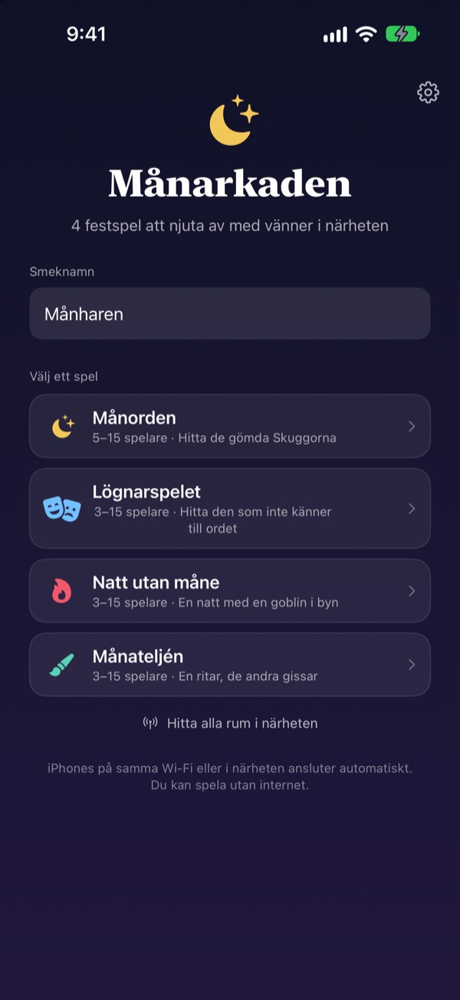
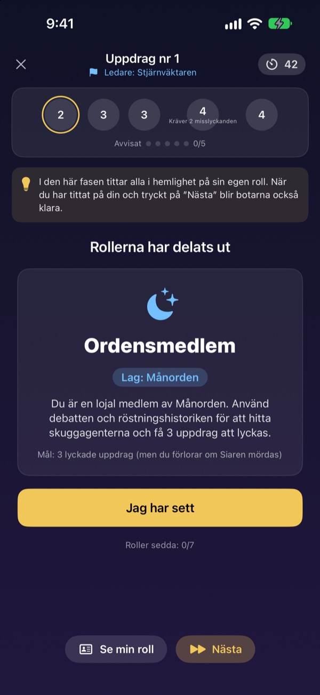
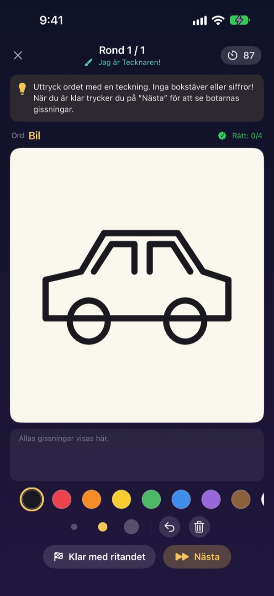
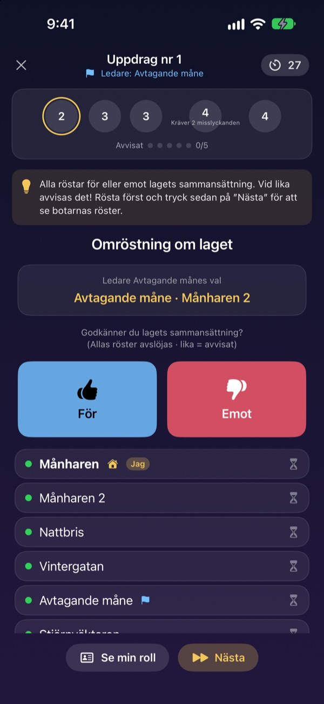

Är alla här?
Fram med iPhonen.
En person skapar ett rum och alla i närheten går med på några sekunder. Roller och hemliga ord syns bara på den egna skärmen: inga kort, och ingen behöver sitta utanför och leda spelet.
Alla spel är gratis. Inget konto, inget internet.

Spela en runda Lögnarspelet
Tänk dig fem iPhones på bordet och tryck på dem en i taget för att kika. Bara en spelare kan inte ordet. Ni kan också skicka runt skärmen.
Alla är här, men vad ska vi spela?
Spelkväll, stugweekend, jul med familjen. I spel med dolda roller måste någon kliva av och leda, och vikta lappar är aldrig riktigt hemliga. I en stuga med svagt wifi går onlinespel inte heller. I Månarkaden sköter iPhonerna spelledningen, rollutdelningen och anslutningen.
Din roll syns bara på din skärm
När spelet startar får varje iPhone sin egen roll eller sitt ord. Ingen kortutdelning, inget ”alla blundar”.
Under omröstningen syns bara vem som har röstat. Vem som röstade på vem är hemligt tills det avslöjas.

Fyra spel för alla sällskap
I Lögnarspelet vinner den som pratar bäst, i Månorden jagar ni Skuggorna med uppdrag och omröstningar, i Natt utan måne letar ni upp Goblin på en enda natt, och i Månateljén ritar en medan resten gissar.
Månorden från 5 spelare, de andra från 3, alla upp till 15.

Nytt spel? Inlärt på några minuter
Varje spel har läget ”Så spelar du”, där du spelar en runda med botar steg för steg. Läs tipset längst upp och tryck på Nästa.
Om appen stängs eller anslutningen bryts trycker du på Fortsätt på startskärmen och är tillbaka i samma runda.

Kom igång i tre steg
- 1
Smeknamn och spel
Alla öppnar appen, skriver ett smeknamn och väljer spel.
- 2
Skapa rum eller gå med
En skapar ett rum, de andra hittar det via Hitta rum i närheten.
- 3
Värden startar
När alla är inne trycker värden på Starta spelet. Appen sköter resten.
De fyra spelen
- Lögnarspelet · 3–15 spelare
- Alla får samma ord utom en. I tur och ordning beskriver man det, sedan röstar man fram lögnaren. Gissar den avslöjade lögnaren ordet vinner hen ändå.
- Månorden · 5–15 spelare
- Avslöja Skuggorna som gömmer sig i Orden. Ledaren väljer ett uppdragslag, alla röstar för eller emot och laget spelar i hemlighet lyckat eller misslyckat. Den sida som först tar tre uppdrag vinner.
- Natt utan måne · 3–15 spelare
- En enda natt, och en Goblin gömmer sig i byn. På natten agerar Shamanen, Nattjuven och Skojaren i hemlighet. I gryningen diskuterar man och har bara en omröstning på sig att hitta Goblin.
- Månateljén · 3–15 spelare
- En ritar ordet och resten gissar i chatten. Ju snabbare du gissar rätt, desto fler poäng, och den som ritar får poäng för varje rätt svar.
Alla spel kan först provas på egen hand med botar i läget ”Så spelar du”.
Vanliga frågor
Jag ser inte rummet.
Kontrollera att värden och spelarna är på samma wifi eller nära varandra. Månarkaden måste vara påslagen under Inställningar ▸ Integritet och säkerhet ▸ Lokalt nätverk för att hitta enheter i närheten. Med både wifi och Bluetooth på blir anslutningen stabilast.
Måste jag tillåta åtkomst till lokalt nätverk?
Ja, det är så appen hittar iPhones i närheten och ansluter till dem. Om du tryckte på Tillåt inte slår du på det igen under Inställningar ▸ Integritet och säkerhet ▸ Lokalt nätverk.
Anslutningen bröts mitt i spelet.
Öppna appen igen och tryck på Fortsätt på startskärmen så kommer du tillbaka till samma rum och runda. Roll och poäng finns kvar. Om det dröjer, gå med igen från rumslistan.
Någon svarar inte och spelet har fastnat.
Värden kan när som helst ta bort en spelare som inte svarar, och spelet räknar om med de som är kvar och fortsätter. I GM-värdläget går det också att hoppa över ett steg som fastnat.
Hur många spelare behövs?
Månorden kräver 5. Lögnarspelet, Natt utan måne och Månateljén startar från 3. Alla tar upp till 15. För få? Lär er reglerna med botar i ”Så spelar du”.
Behövs internet eller konto?
Nej. Ingen registrering, ingen inloggning, inget internet. iPhones i närheten ansluter direkt och speldata skickas aldrig till en server.
Kan jag prova ett spel själv först?
Ja. Välj ett spel och sedan ”Så spelar du (öva med botar)”. Botarna går in i rummet och du spelar en hel runda steg för steg.
Hur rapporterar jag en bugg eller skickar en idé?
Direkt i appen under Inställningar (kugghjulet) ▸ Support, eller via mejl till adressen nedan. Vi svarar så snart vi kan.
Buggar, idéer eller annat: skriv till mizzking75@gmail.com.